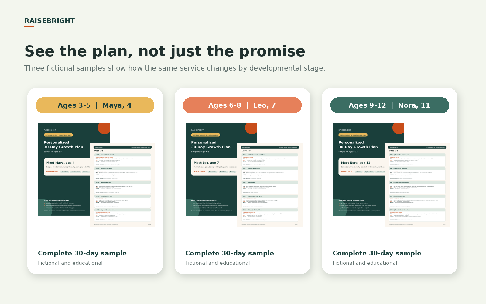
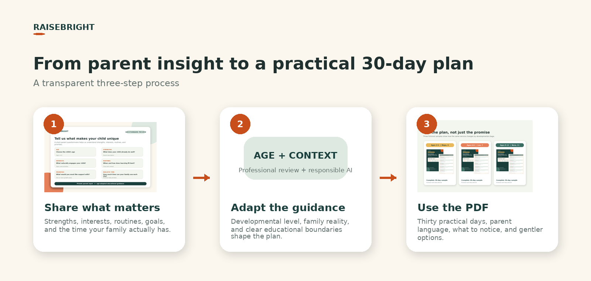
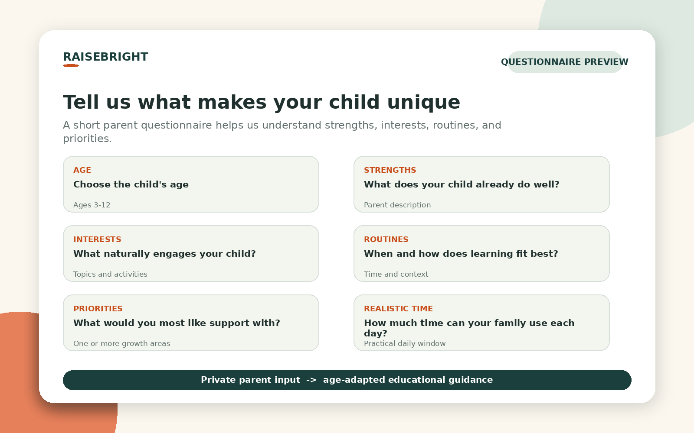
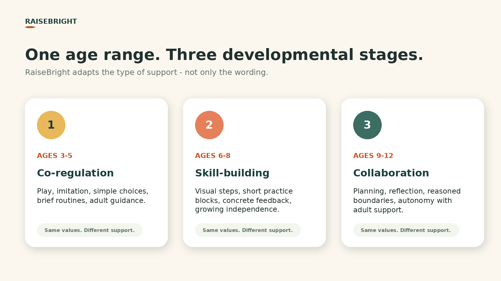

AGES 3-5
Maya, age 4
Playful adult guidance for transitions, emotion words, and brief listening.
- 5-10 minute activities
- co-regulation and imitation
- simple choices and picture cues
Preview the questions, see how guidance changes across ages 3-12, and look inside the PDF before deciding whether RaiseBright fits your family.
All sample children and circumstances on this page are fictional. RaiseBright provides educational guidance, not medical or psychological care.

RaiseBright uses parent-provided context to shape practical educational guidance around a child's age, interests, routines, strengths, and current priorities.

The short parent questionnaire asks about the child as a whole - not only the problem a parent wants to solve.
The complete questionnaire follows purchase. This preview does not collect or submit data.

The same RaiseBright principles are expressed differently as language, independence, self-awareness, and daily demands grow.

These samples are intentionally different. They show how activities, parent language, expected independence, and observation cues change with age and context.
Playful adult guidance for transitions, emotion words, and brief listening.
Concrete systems for starting homework, persisting, and returning after mistakes.
Collaborative tools for planning, digital balance, and friendship confidence.
Professional experience shapes the educational boundaries, tone, age fit, safety language, and final review.
AI can help structure parent-provided information and draft tailored material. It does not diagnose or replace professional judgment.
The parent decides what is suitable, adapts or stops activities, and seeks qualified help when a concern needs more than educational guidance.
Physician, healthcare executive, and founder of RaiseBright, with decades of experience across primary care, public health, social care, and services for children and families.
No. RaiseBright provides general educational guidance and does not diagnose, assess, treat, or replace advice from an appropriately qualified professional.
No. Maya, Leo, Nora, and every circumstance in the sample plans are fictional and used only to demonstrate how age and context can change the guidance.
No. AI supports organization and personalization. Professional judgment sets the standards, boundaries, and final review; the parent retains judgment about fit and safety.
One personalized 30-day growth plan in PDF format, emailed within 24 hours after the parent questionnaire is completed.
No. The current offer is a $9.99 one-time payment with no subscription.
Start with the existing RaiseBright purchase flow. After payment, complete the short parent questionnaire and receive the personalized PDF by email within 24 hours.
Start My 30-Day Plan